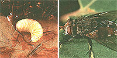

Here's the eighth in our series about friends and foes in your garden.
Part VIII: The Helpful Tachinid Fly
Let me start this off by admitting that, for the most part, flies have earned their bad reputations. Most could even be said to deserve ending up beneath the old flyswatter. After all, flies include all manner of bothersome buzzers, from annoying houseflies and crop tasting fruit fly larvae to welt-raising horseflies and disease-carrying mosquitoes. Nonetheless, among the various fly families there really is one clan that is remarkably helpful to humankind ...and most especially to gardeners. No kidding! This two-winged boon to the soil tiller is called the caterpillar, or tachinid, fly (family Tachinidae).
Actually, it's the tachinid's larvae -not the adult flies-that are beneficial to us. You see, these gray to greenish white "worms" parasitize a wide variety of foliage-eating insects, such as grasshoppers ...Japanese beetles ...corn borers ...and many other plant pests. (Unfortunately, some species of tachinid youngsters also have a taste for the caterpillars of harmless multicolored butterflies. But then, no bug's perfect, eh?)
Adult tachinids are often mistaken for common houseflies, since they're about the same size (1/3 to 1/2" long) and color (gray or brown with pale markings) as their ne'er-do-well cousins. However, the members of this caterpillar-killing clan do have one easily distinguishable characteristic: Their abdomens are covered with tiny bristles (see photo).
LARVAL APPETITES
Tachinids have a parasitic attack plan with an ingenious backup system. Usually, the adult female lays her eggs directly onto a host insect (one egg per customer!). Then, after the larva hatches, it burrows down into and proceeds to feed on its victim. However, if a host isn't readily available to a birthing mother, she may lay her offspring on pest enticing foliage. That way, when a hungry (prospective) host drops by for lunch, it will sometimes ingest a tachinid as part of the entree! Furthermore, the uneaten eggs will go on to hatch on their own, producing larvae that will later hitch rides and find their new "digs" in passing hosts.
There are over 1,300 species of tachinid flies in North America alone, each one having its own favorite "meal ticket." Still, the end result for all hosts is the same: Immature insects that have been "infiltrated" by fly larvae become sluggish and sickly and generally won't mature into adults; parasitized adults typically become too weak to mate, and eventually die. (An interesting note about respiration: In order to obtain oxygen, a tachinid maggot either attaches the rear part of its body-that containing its respiratory apparatus-to the tracheal system of its victim, or it lets its oxygen-gathering end actually protrude from the host's body.)
After the larva's growth is complete, the tachinid tunnels out of its host and drops to the ground to pupate. Once fully mature, tachinid flies feed only on nectar and other sweet fluids.
So the next time you go on a rampage with the flyswatter, check to make sure your victim isn't a harmless, helpful, fuzzy-bellied tachinid fly. That last-minute stay of execution could be as beneficial to you (and your garden) as it is to the fly that gets away!
|
 Tachinid fly larva, Tachinid fly |
|
|